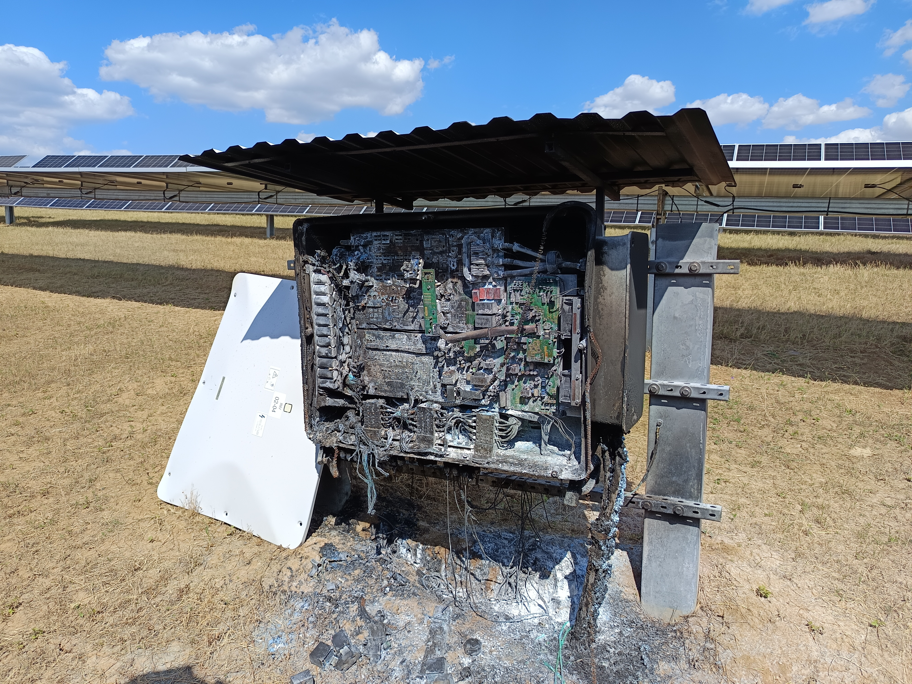
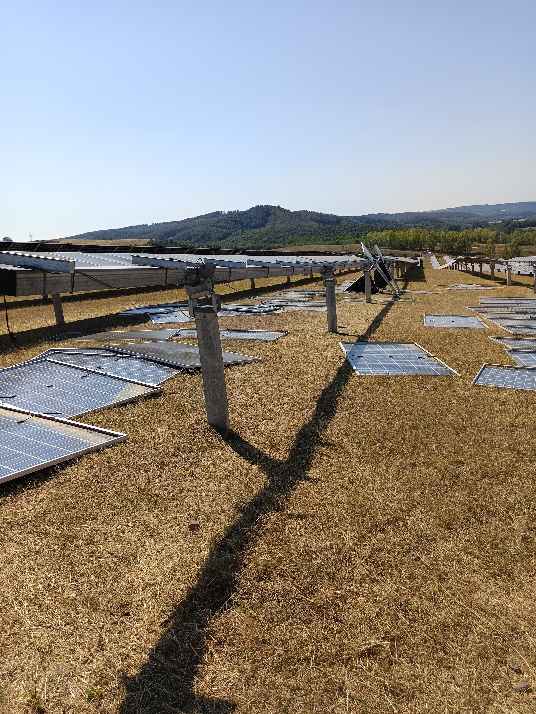
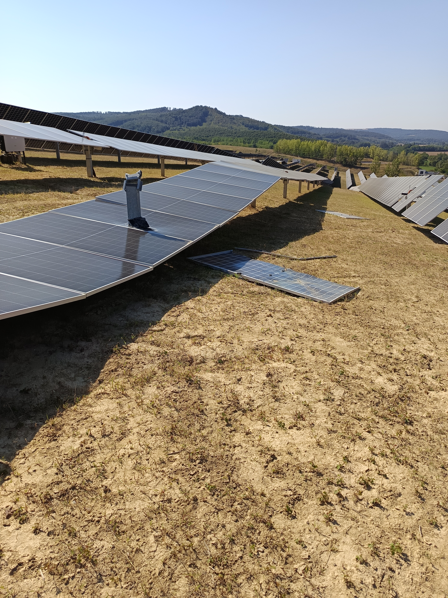

Villamos O&M
Egy naperőmű üzembiztonsága nem egyetlen beavatkozáson múlik. A folyamatos ellenőrzés, a megelőző karbantartás és az időben felismert hibák együttesen támogatják a kiszámítható és hosszú távú működést.
Egy meghibásodás költsége nem a javítással kezdődik.
Egy ipari naperőmű villamos hibája nem kizárólag egy javítási feladat. Az üzemzavar termeléskiesést, bevételkiesést és az üzemeltetés további szervezési terheit is maga után vonhatja.
Éppen ezért a villamos üzemeltetés célja nem pusztán a hibák elhárítása, hanem azok lehetőség szerinti megelőzése és a rendszer állapotának folyamatos nyomon követése.
A megfelelő műszaki kontroll segíthet abban, hogy a problémák még azelőtt felismerhetők legyenek, hogy jelentősebb üzemzavart vagy hosszabb kiesést okoznának.
Amikor egy probléma már nem csak mérhető, hanem látható.
Egy villamos rendszerben kialakuló rendellenesség megfelelő ellenőrzés és beavatkozás nélkül idővel súlyosabb károsodáshoz vezethet. A rendszeres állapotellenőrzés és a megelőző karbantartás célja, hogy az ilyen problémák lehetőség szerint még korábban felismerhetők legyenek.

A meghibásodás nem mindig egyik pillanatról a másikra történik.
A villamos berendezések állapotának romlása fokozatosan is kialakulhat. Egy kezdeti eltérés, túlmelegedés vagy hibás működés idővel további károsodást okozhat.
Mire a probléma szabad szemmel is egyértelművé válik, addigra maga a berendezés is jelentős károsodást szenvedhetett.
Nem csak a villamos rendszer állapota számít.
Egy naperőmű hosszú távú működésében a modulok, a tartószerkezetek és azok mechanikai állapota is fontos szerepet játszik. Az elmozdult vagy sérült elemek időben történő felismerése az üzemeltetés egyik fontos része.

Elmozdult modulok
A modulok és a tartószerkezetek állapotának ellenőrzése segíthet az olyan fizikai eltérések felismerésében, amelyek hosszabb távon a rendszer működésére is hatással lehetnek.

Sérült rendszerállapot
A sérült vagy deformálódott elemek állapota további vizsgálatot és szükség esetén beavatkozást igényelhet. A cél az, hogy az ilyen eltérések ne maradjanak észrevétlenül az üzemeltetés során.
Nem csak hibaelhárítás. Tudatos üzemeltetés.
Rendszeres ellenőrzés
A villamos berendezések és rendszerkomponensek állapotának rendszeres ellenőrzése segíti az eltérések korai felismerését.
Megelőző karbantartás
A tervezetten elvégzett karbantartási feladatok célja a váratlan hibák és az azokból eredő üzemszünetek kockázatának csökkentése.
Hibafeltárás és hibaelhárítás
Rendellenesség esetén a probléma forrásának feltárása és a szükséges beavatkozás meghatározása támogatja a mielőbbi helyreállítást.
Dokumentált működés
Az elvégzett ellenőrzések, karbantartások és beavatkozások dokumentálása átláthatóbbá teszi a rendszer állapotát és előzményeit.
Nem akkor kezdünk el foglalkozni vele, amikor már megtörtént a hiba.
A villamos O&M lényege a folyamatos figyelem és a megelőző szemlélet. A cél, hogy a lehetséges problémák minél korábban azonosíthatók legyenek, és a szükséges beavatkozás lehetőség szerint tervezetten történhessen.
Állapotfelmérés
A rendszer aktuális állapotának, működésének és az ellenőrzendő területeknek a felmérése.
Eltérések azonosítása
A rendellenes működésre vagy potenciális hibára utaló jelek feltárása és értékelése.
Beavatkozás
A szükséges karbantartási vagy hibaelhárítási feladatok elvégzése, a lehetőségekhez mérten tervezetten.
Dokumentálás
Az elvégzett munkák és tapasztalatok rögzítése a későbbi üzemeltetési döntések támogatására.
A cél nem a gyorsabb javítás. A cél a kisebb kiesési kockázat.
Beszéljük át naperőműve jelenlegi üzemeltetési és karbantartási igényeit, valamint azt, hogy milyen feladatokkal támogathatjuk a rendszer hosszú távú üzembiztonságát.
Kapcsolatfelvétel →